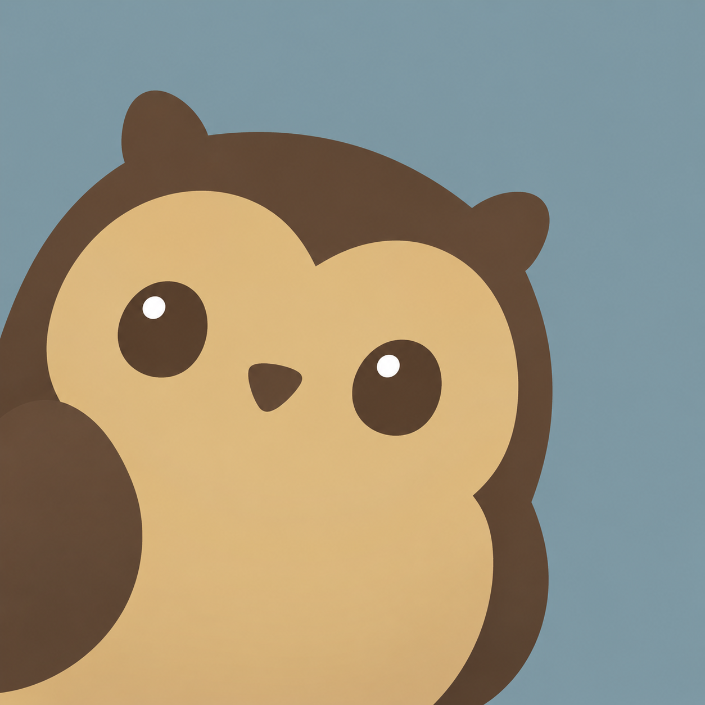
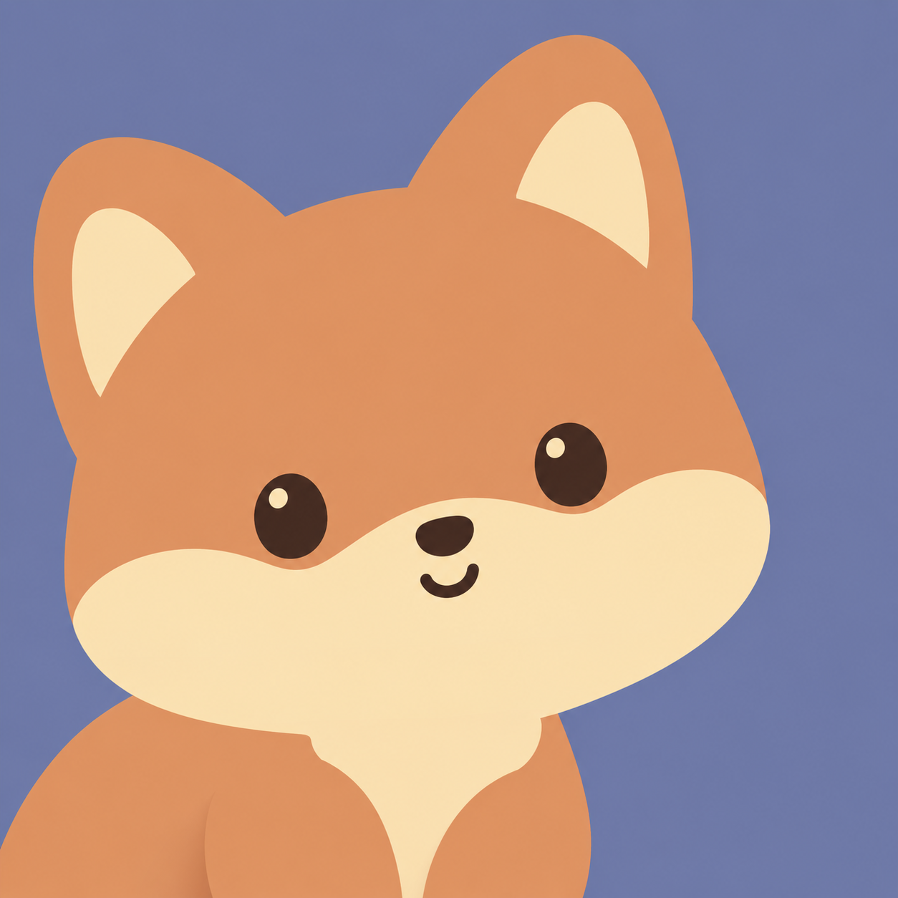
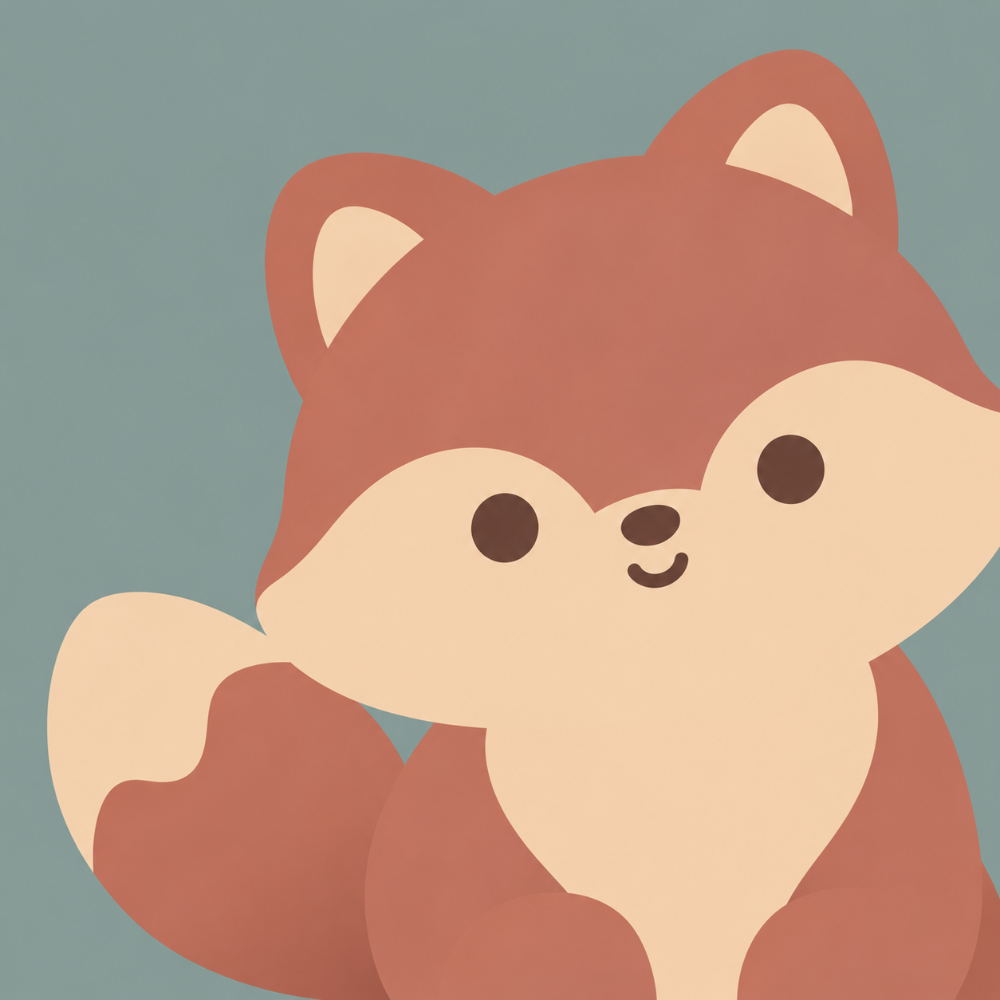
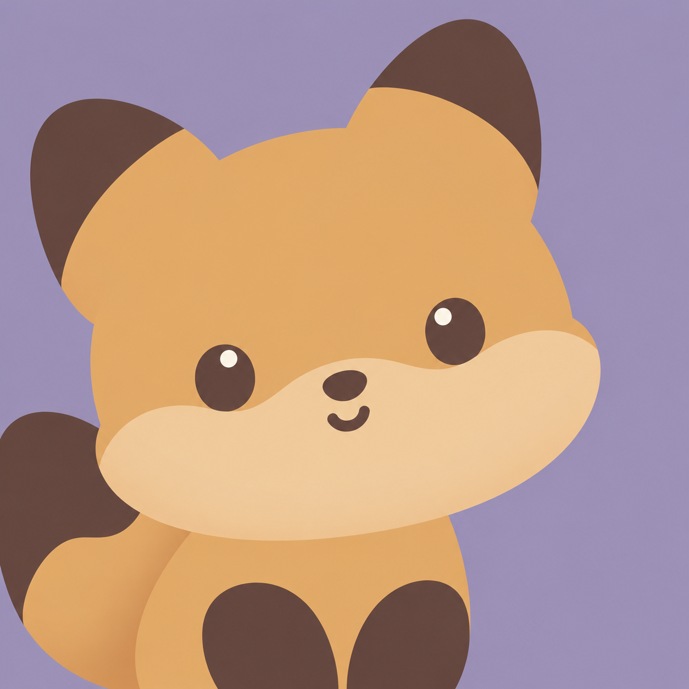
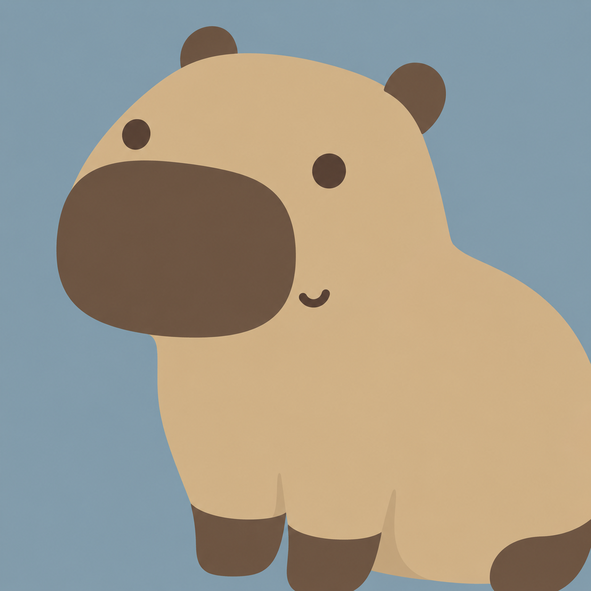
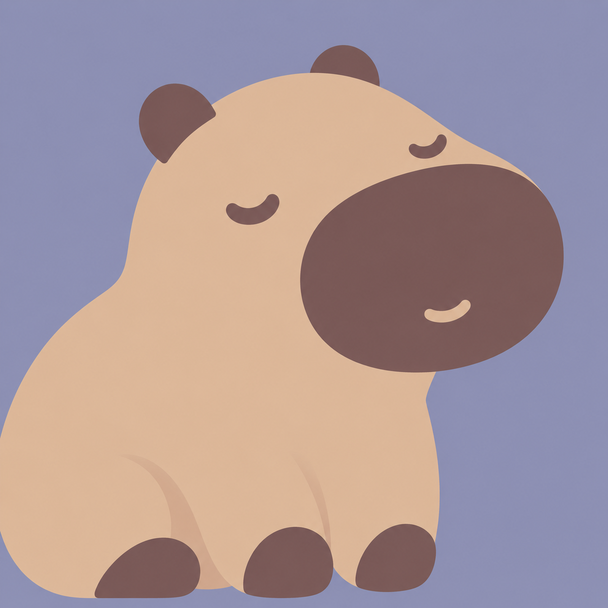
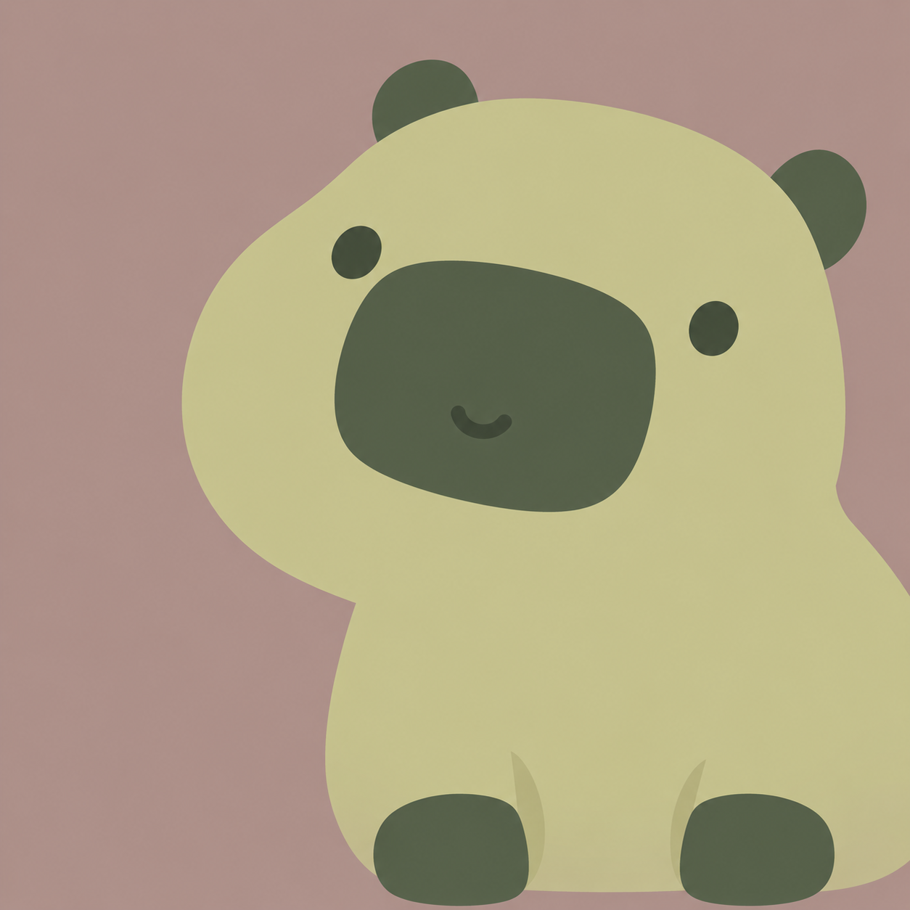

猫头鹰：观察判断 · 狐狸：敏捷操作 · 水豚：沉着耐心
观察与判断
角色 #E8D5AD / #3F405A背景 #747AB4
角色 #B9CEE0 / #3C4664背景 #AB9DBD

角色 #DDBA80 / #544333背景 #839BA4
角色 #D7D0F0 / #514773背景 #8594AC

快捷与敏捷操作
角色 #D89168 / #FAE0B0背景 #727CA6

角色 #B86E61 / #F4D5B2背景 #8B9E9B

角色 #E3AD69 / #5C443F背景 #A294B9

沉着与耐心
角色 #D3B98F / #675240背景 #899EAB

角色 #DDBAA0 / #765758背景 #9293B4

角色 #C9C791 / #505D49背景 #AF9691